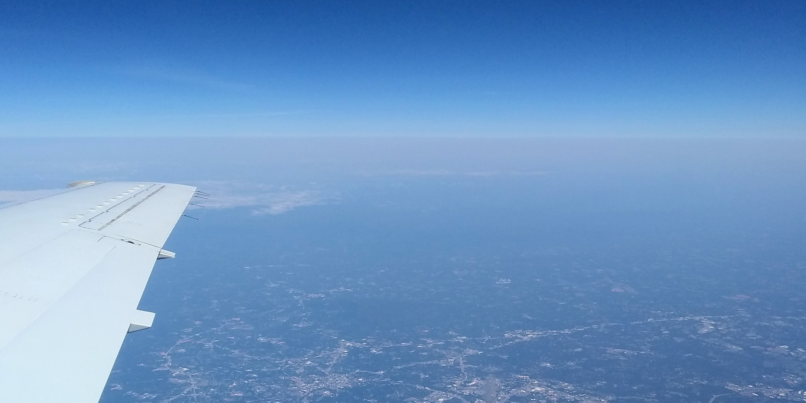

¿Listo para comenzar tu aventura?
No importa a donde vayas, el camino siempre es mejor con buena música...
En esta sección vas a encontrar playlists pensadas para cada tipo de viaje, así que elegí tu destino y deja que la música te lleve!
No importa a donde vayas, el camino siempre es mejor con buena música...
En esta sección vas a encontrar playlists pensadas para cada tipo de viaje, así que elegí tu destino y deja que la música te lleve!